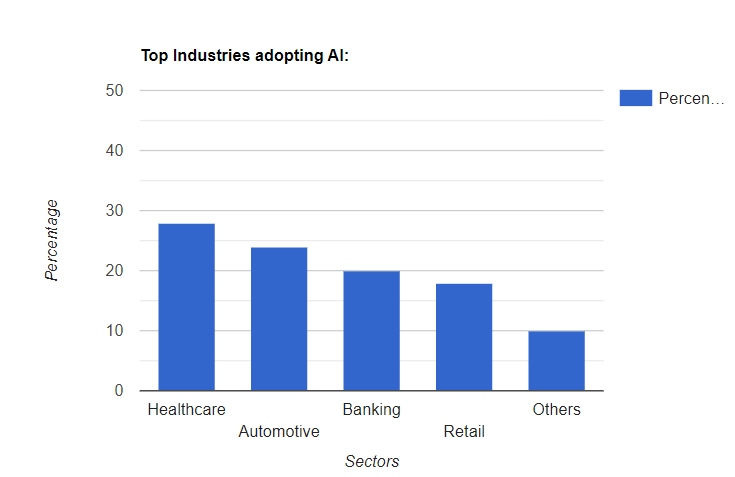
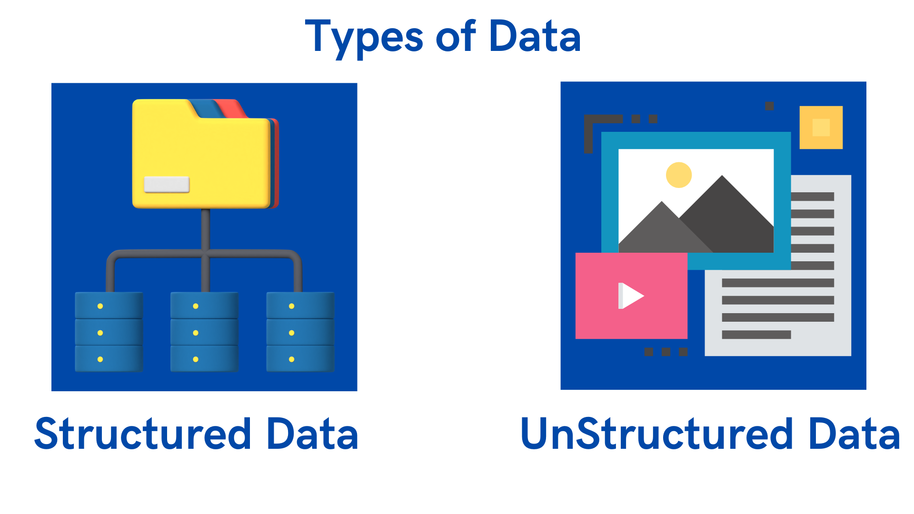

Introduction to AI
What is AI?
Artificial intelligence, or AI, is a rapidly growing field that has the potential to transform the way we live, work, and interact with technology. It involves the use of computer algorithms and machine learning techniques to enable computers to perform tasks that would typically require human intelligence, such as visual perception, speech recognition, decision-making, and language translation.
Definition of AI
AI can be defined as the ability of a machine or computer program to perform tasks that typically require human intelligence, such as perception, reasoning, learning, and decision-making. AI can be broadly categorized into two types: narrow or weak AI and general or strong AI. Narrow AI is designed to perform a specific task, while general AI is designed to think and reason like a human being.
Brief history of AI
AI has been around for decades, with its origins dating back to the 1950s. The term "artificial intelligence" was first coined by computer scientist John McCarthy in 1956. Over the years, AI has seen significant advancements in areas such as computer vision, natural language processing, and machine learning.
Examples of AI applications in real life
AI has numerous applications in real life, including image and speech recognition, virtual personal assistants, recommendation systems, fraud detection, autonomous vehicles, and predictive analytics. One example of AI application is Siri, the virtual personal assistant on Apple devices. Siri uses natural language processing and machine learning algorithms to understand and respond to user requests.

Importance of AI in today's world
AI has become increasingly important in today's world, with its applications ranging from healthcare and finance to transportation and education. It has the potential to transform industries and revolutionize the way we live and work. AI can improve efficiency, productivity, and accuracy, while also providing new opportunities for innovation and growth. As such, it is critical to understand AI and its potential impact on society.

Introduction to Machine Learning
Machine Learning (ML) is a subset of Artificial Intelligence (AI) that enables machines to learn and improve from experience without being explicitly programmed. In other words, it is a method of training machines to perform a specific task by feeding them data and allowing them to learn from it. Machine Learning can be divided into three main types:
-
Supervised Learning: In supervised learning, the machine is trained on labeled data, where the correct output is already known. The machine learns to map the input data to the correct output by minimizing the error between the predicted and actual output.
-
Unsupervised Learning: In unsupervised learning, the machine is trained on unlabeled data, where the correct output is not known. The machine learns to identify patterns and relationships in the data by clustering similar data points together.
-
Reinforcement Learning: In reinforcement learning, the machine is trained to make decisions based on the feedback it receives from its environment. The machine learns to maximize its rewards by taking actions that lead to positive outcomes and avoiding actions that lead to negative outcomes.
Machine Learning has numerous applications in real life, including:
-
Image and Speech Recognition: Machine Learning is used to train machines to recognize images and speech patterns. This technology is widely used in facial recognition, speech-to-text, and object recognition software.
-
Fraud Detection: Machine Learning algorithms are used to identify fraudulent activities by analyzing patterns in data.
-
Personalized Recommendations: Machine Learning algorithms are used by companies like Netflix and Amazon to recommend personalized content to their users.
-
Medical Diagnosis: Machine Learning is used to analyze medical data and provide accurate diagnosis and treatment options to patients.
The importance of Machine Learning in today's world cannot be overstated. Machine Learning is being used to transform industries like healthcare, finance, and retail by automating tasks, reducing costs, and improving accuracy. Machine Learning is also being used to develop self-driving cars, drones, and other autonomous systems, which have the potential to revolutionize transportation and logistics.
Data and Preprocessing
Data is one of the most crucial components of machine learning as machine learning algorithms require data to learn and make predictions. In this section, we will discuss the definition of data, types of data, the importance of data in machine learning, and data preprocessing techniques.
Definition of Data:
Data refers to a collection of facts, figures, or information that is used for analysis, decision making, or research. In the context of machine learning, data is the foundation on which models are built.
Types of Data:
There are two main types of data: structured and unstructured. - Structured data refers to data that is organized in a predefined manner such as in a table or a spreadsheet. Examples of structured data include customer purchase history or financial data. - Unstructured data, on the other hand, refers to data that is not organized in a predefined manner. Examples of unstructured data include text, images, and videos.

Importance of Data in Machine Learning:
The quality of data used in machine learning algorithms plays a crucial role in the accuracy of the model's predictions. Poor quality data can lead to incorrect predictions and flawed models. In contrast, high-quality data can significantly improve the accuracy of machine learning models.
Data Preprocessing:
Data preprocessing is a crucial step in machine learning that involves cleaning and transforming raw data into a format that can be used for model training. This step involves several techniques such as data cleaning, feature scaling, and feature engineering.
Data Cleaning:
Data cleaning is the process of identifying and correcting errors, incomplete data, or inconsistent data. This step is important to ensure that the model is trained on high-quality data that is free from errors or outliers.
Feature Scaling:
Feature scaling is a technique used to normalize data so that all features have the same scale. This step is important to prevent certain features from dominating the training process.
Feature Engineering:
Feature engineering involves transforming raw data into features that can be used for model training. This step is important to identify and extract the most relevant features that can be used to make accurate predictions.
In summary, data is a crucial component of machine learning, and the quality of data used in machine learning algorithms plays a critical role in the accuracy of the model's predictions. Data preprocessing techniques such as data cleaning, feature scaling, and feature engineering are important steps in preparing data for machine learning model training.
Supervised Learning:
Supervised learning is a type of machine learning where the algorithm learns to map input examples to output labels, based on a set of training data that is already labeled. In other words, the algorithm learns from labeled data and can predict outcomes for new, unseen data.
Types of Supervised Learning:
-
Classification: Classification is a type of supervised learning where the goal is to predict a categorical label for a given input. For example, predicting whether an email is spam or not spam, or predicting the type of flower based on its features.
-
Regression: Regression is a type of supervised learning where the goal is to predict a continuous numerical value for a given input. For example, predicting the price of a house based on its features.
Examples of Supervised Learning algorithms:
-
Decision Trees: A decision tree is a flowchart-like structure that represents a model for decision-making, where each internal node represents a "test" on a feature (e.g., whether a flower petal is longer than a certain length) and each leaf node represents a class label or a numeric value.
-
Random Forest: Random forest is an ensemble learning method that combines multiple decision trees to improve the accuracy of predictions. Each tree in the forest is trained on a random subset of the training data and a random subset of the input features.
-
Support Vector Machines (SVM): SVM is a popular machine learning algorithm for both classification and regression problems. SVM tries to find a hyperplane that best separates the input data into different classes.
Unsupervised Learning
Unsupervised learning is a type of machine learning where the model is trained on a dataset that is not labeled or categorized. The goal of unsupervised learning is to identify patterns and relationships in the data without any prior knowledge or guidance. Definition of Unsupervised Learning Unsupervised learning is a type of machine learning where the model learns from the data without any labeled examples. It involves finding hidden patterns or structures in the data.
Types of Unsupervised Learning
There are two main types of unsupervised learning:
-
Clustering: Clustering involves grouping similar data points together. The goal is to find groups or clusters within the data that have similar characteristics.
-
Dimensionality Reduction: Dimensionality reduction involves reducing the number of features in the data while still retaining as much information as possible. This is done by identifying the most important features in the data and discarding the less important ones.
Examples of Unsupervised Learning algorithms
There are several popular unsupervised learning algorithms, including: K-Means Clustering: K-Means is a popular clustering algorithm that groups data points into k clusters based on their similarity.
-
Principal Component Analysis (PCA): PCA is a dimensionality reduction technique that identifies the most important features in the data and discards the less important ones.
-
Evaluating Unsupervised Learning Models Evaluating unsupervised learning models is more challenging than evaluating supervised learning models because there are no labeled examples to compare the results to. One approach is to use visualization techniques to explore the results and identify any patterns or relationships in the data. Another approach is to use clustering evaluation metrics, such as silhouette score or Davies-Bouldin index, to measure the quality of the clustering results.
Natural Language Processing
Natural Language Processing (NLP) is a branch of Artificial Intelligence that deals with the interaction between computers and humans using natural language. NLP is concerned with the automatic processing of natural language texts or speech.
Definition of NLP:
Natural Language Processing (NLP) is the field of computer science and artificial intelligence that deals with the processing of natural language data, such as text and speech, to enable communication between humans and machines.

NLP Techniques:
NLP techniques are used to process natural language data. These techniques include Tokenization, POS Tagging, Named Entity Recognition, etc.
-
Tokenization: Tokenization is the process of breaking down text into smaller parts, such as words or phrases, called tokens. Tokenization is a crucial step in NLP, as it helps in converting unstructured data into structured data.
-
POS Tagging: Part of Speech (POS) Tagging is the process of assigning a part of speech, such as noun, verb, adjective, etc., to each word in a sentence. POS tagging helps in understanding the grammatical structure of a sentence.
-
Named Entity Recognition: Named Entity Recognition (NER) is the process of identifying and extracting entities, such as names of people, places, organizations, etc., from a text. NER helps in extracting useful information from text data.
NLP Applications:
NLP applications are used in a wide range of areas, including Sentiment Analysis, Chatbots, Language Translation, etc.
-
Sentiment Analysis: Sentiment Analysis is the process of identifying and extracting subjective information from text, such as emotions and opinions. Sentiment Analysis is used in various fields, including marketing, customer service, and social media analysis.
-
Chatbots: Chatbots are computer programs designed to simulate human conversation. Chatbots are widely used in customer service, where they can handle common queries and provide support to customers.
-
Language Translation: Language Translation is the process of converting text from one language to another. Language Translation is widely used in various areas, including international business, tourism, and education.
Deep Learning
Deep learning is a subset of machine learning that focuses on building and training deep neural networks. Deep neural networks are a type of artificial neural network that have many layers, allowing them to learn and represent complex patterns in data. Deep learning has been extremely successful in recent years, achieving state-of-the-art results in many fields such as computer vision, natural language processing, and speech recognition.
Types of Deep Learning:
-
Convolutional Neural Networks (CNNs) - CNNs are commonly used for image classification tasks. They are designed to recognize patterns in image data by applying a series of filters to the input image, which extract features that are then used to classify the image. Recurrent Neural Networks (RNNs) - RNNs are used for sequential data such as time-series data, natural language processing, and speech recognition. They are designed to learn from sequences of data by processing each input and maintaining a hidden state that captures information about the previous inputs.
-
Deep Belief Networks (DBNs) - DBNs are composed of multiple layers of restricted Boltzmann machines, which are generative models that learn to represent the data in a lower-dimensional space. They are commonly used for unsupervised learning tasks such as feature learning and dimensionality reduction.
Examples of Deep Learning applications in real life:
-
Image Recognition - Deep learning models such as CNNs have achieved state-of-the-art results in image recognition tasks such as object detection, image classification, and image segmentation.
-
Speech Recognition - RNNs have been used for speech recognition tasks such as automatic speech recognition (ASR) and speaker identification.
-
Natural Language Processing - Deep learning models such as RNNs and transformer-based models have been used for various NLP tasks such as sentiment analysis, language translation, and text summarization.
Introduction to Python
Python is a high-level, interpreted programming language that is widely used in various domains including machine learning. Some of the key features of Python are its simplicity, readability, and a large number of libraries available for various tasks. Python can be used for tasks such as data analysis, web development, and machine learning.
Libraries for Machine Learning
-
NumPy: NumPy is a library for numerical computing in Python. It provides support for arrays and matrices, making it useful for mathematical operations required in machine learning.
-
Pandas: Pandas is a library for data manipulation and analysis. It provides easy-to-use data structures for data processing, cleaning, and transformation.
-
Scikit-Learn: Scikit-Learn is a popular library for machine learning in Python. It provides implementations of various algorithms for tasks such as classification, regression, and clustering.
-
TensorFlow: TensorFlow is an open-source library developed by Google for machine learning and deep learning tasks. It provides a framework for building and training neural networks.
Basic Programming Concepts
- Variables: Variables are used to store data in memory for later use. In Python, variables can be declared without specifying the data type explicitly.
x = 10
y = 'hello'
-
Data Types: Python supports various data types such as integers, floating-point numbers, strings, and booleans.
-
Loops: Loops are used for executing a block of code repeatedly. Python supports two types of loops: for loop and while loop. python
for i in range(10):
print(i)
while condition:
# do something
- Conditional Statements: Conditional statements are used for executing a block of code based on certain conditions. Python supports if-else statements and nested if statements. bash
if x > 10:
print('x is greater than 10')
else:
print('x is less than or equal to 10')
- Functions: Functions are blocks of code that can be reused multiple times. Python allows defining functions using the def keyword. python
def add_numbers(x, y):
return x + y
Implementing Machine Learning Models in Python
To implement machine learning models in Python, we first need to load the data and preprocess it. This involves tasks such as cleaning the data, scaling the features, and splitting the data into training and testing sets.
import pandas as pd
from sklearn.model_selection import train_test_split
from sklearn.preprocessing import StandardScaler
# Load data
data = pd.read_csv('data.csv')
# Preprocess data
X = data.drop('target', axis=1)
y = data['target']
scaler = StandardScaler()
X = scaler.fit_transform(X)
X_train, X_test, y_train, y_test = train_test_split(X, y, test_size=0.2)
Once the data is preprocessed, we can create a machine learning model using one of the available algorithms in Scikit-Learn. For example, we can create a logistic regression model as follows:
from sklearn.linear_model import LogisticRegression
# Create model
model = LogisticRegression()
# Train model
model.fit(X_train, y_train)
# Evaluate model
score = model.score(X_test, y_test)
print('Accuracy:', score)
We can also use TensorFlow to build and train deep learning models. For example, we can build a convolutional neural network (CNN)
Ethics in AI
Artificial intelligence has the potential to revolutionize our lives, but it's important that we approach its development and use with ethical considerations in mind. In this chapter, we'll explore the importance of ethics in AI, the issue of bias in machine learning, and the principles of fairness, transparency, and accountability in AI. We'll also discuss the responsible use of AI.
Importance of Ethics in AI
As AI systems become more powerful and prevalent, it's important that we consider the ethical implications of their use. AI has the potential to impact our lives in ways we can't even imagine, from job automation to healthcare to criminal justice. It's essential that we ensure AI is developed and used in an ethical manner that benefits society as a whole.
Bias in Machine Learning
One of the biggest concerns when it comes to AI ethics is the issue of bias in machine learning. Bias can creep into AI systems in a number of ways, from biased training data to biased algorithms. This can lead to unfair outcomes, such as discriminatory hiring practices or biased criminal sentencing.
Fairness, Transparency, and Accountability in AI
To combat bias and ensure ethical AI, it's important that we adhere to the principles of fairness, transparency, and accountability. Fairness means ensuring that AI systems are not discriminatory and do not perpetuate existing inequalities. Transparency means making AI systems open and understandable so that they can be audited and their decisions can be explained. Accountability means holding developers and users of AI systems responsible for their actions and the outcomes of those systems.
Responsible Use of AI
Finally, we must consider the responsible use of AI. This means using AI in ways that align with our ethical values and ensuring that AI systems are developed and used for the benefit of society. It also means being aware of the potential negative consequences of AI and working to mitigate those risks.
In summary, ethical considerations are crucial when it comes to the development and use of AI. By adhering to the principles of fairness, transparency, and accountability, and ensuring responsible use, we can harness the power of AI for the benefit of society while minimizing its potential harms.